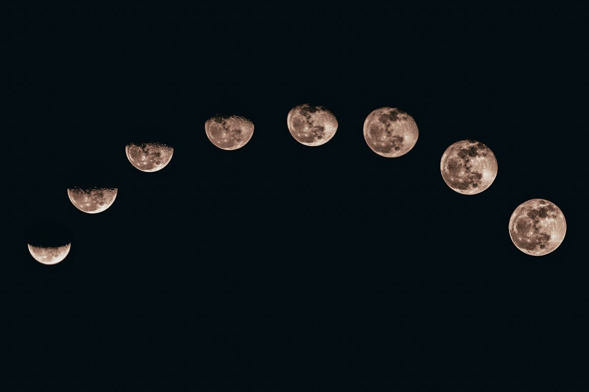

Two Percent of the Moon's Mantle Took 150 Gigawatts of Tidal Heat
A convection model with one low-viscosity layer moves Earth's kneading to the core-mantle boundary, and that relocation is what makes young basalts survivable.

The rock that starts this argument came back from Oceanus Procellarum. Samples returned by China's Chang'e-5 mission are basalts, and they date to about 2 billion years ago. That is young for a body that formed roughly 4.5 billion years ago from impact debris. The age is the fact every lunar model now has to carry.
A new paper in the journal Planet offers an answer that does not add a heat source. Miao Chen, at the Chengdu University of Technology, led a team that put a low-viscosity rock layer between the lunar core and mantle. That layer sat inside a three-dimensional convection model. The claim is about where tidal energy went, not how much of it existed.
The cooling problem stated plainly
The Moon assembled from debris after a protoplanet struck the early Earth. That debris mass was about a quarter of Earth's size, and a quarter of a planet cools on a schedule. Physics gives the small body a short clock: heat escapes through the surface, and the surface-to-volume ratio works against retention.
Geological quiet should have followed early. Lava that young should not exist, which is why the Chang'e-5 basalts are treated as an anomaly rather than as a routine datum.
Two suspects already cleared
Radioactive decay was the first candidate. Potassium and uranium in the mantle do produce heat, and the report on the new model says that route left too little of it to melt rock this late.
Impacts were the second suspect. An asteroid strike makes a local thermal spike, and the heavy bombardment had ended well before the basalts formed. Neither route explains lava that is widespread and young at the same time.
What a parent planet does to an orbit
A body in an elliptical orbit is squeezed, stretched and kneaded by its parent's gravity. The friction of that flexing becomes heat. Jupiter does this to Io, and Io stays volcanic because of it.
Around 2 billion years ago the Moon sat much closer to Earth. Its orbital period was 16 days instead of the current 27, and its orbit was far more eccentric than the one we see tonight. A stronger gradient and a tighter ellipse mean more kneading.
The change in the model is one thin layer
Earlier attempts treated the Moon as a mostly uniform sphere. Chen's team moved to a realistic three-dimensional mantle. They ran convection simulations on it. Between core and mantle they inserted a layer of low-viscosity rock.
That single structural choice is where the result comes from. Energy that a uniform model spreads thin instead concentrated at two symmetric regions along the core-mantle boundary. The team calls them tidal heating anomaly zones, or THAZs.
Two percent of the volume, 150 gigawatts
Around 3.2 billion years ago the anomaly zones covered 2.5 percent of the mantle's volume. They received 150 gigawatts, which the report puts at more than four times the energy available from radioactive decay.
Read the two numbers together.
A volume that small holding heat that large is a plumbing result, not a budget increase. The mantle did not get more energy. The energy found a narrow place to go.
What the extra warmth buys
Three consequences come bundled. The lunar core stays warm longer than the cooling clock allows, which is the direct answer to the basalts.
A warm core also keeps a dynamo running. The model predicts a magnetic field lasting longer than earlier work expected. That addresses a standing puzzle: Apollo samples appear to have formed in a strong field, in a Moon that should already have lost one.
Plumes follow. With the base of the mantle heated in two places, large plumes rise toward the crust. Stranded pockets of that mantle material later melted, and the report ties those melts to the basalts Chang'e-5 brought back.
Where the theory stops
The report is explicit that the model is still only a theory. Much of lunar geological history remains unknown. The paper, as summarized, offers no temperature figures for the anomaly zones, only the power they received.
That gap is checkable by sample rather than by argument. A mission can drill where the model says a stranded mantle pocket melted, and the chemistry of that rock either matches the prediction or does not. Planned lunar missions are the reason the report treats the question as open instead of settled.
What to do with the number
Treat the 150 gigawatts as a claim about geometry. If a low-viscosity layer at the core-mantle boundary focuses tidal heat into 2.5 percent of the mantle, then young lava and a long-lived field stop being two separate embarrassments for the cooling clock. The plumes come from the same place. The next sample return is the cheapest way to find out which part of that story survives contact with rock.